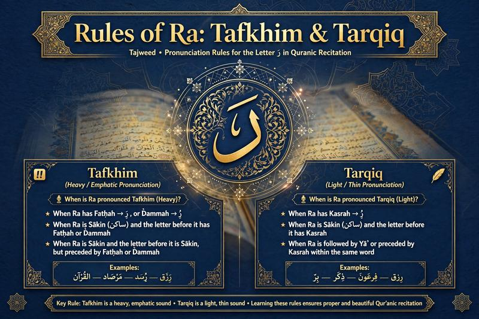

Rules of Ra in Tajweed: Tafkhim and Tarqiq

The Arabic letter Ra (ر) can be pronounced either heavily or lightly in Quran recitation. In Tajweed, the heavy pronunciation is called Tafkhim, while the light pronunciation is called Tarqiq.
Knowing when to make Ra heavy or light is an important part of accurate Quran recitation. The correct pronunciation depends mainly on the vowel on Ra and, in some cases, the vowel or letter that comes immediately before it.
A Quran teacher can listen to your recitation and help you recognize when Ra should be pronounced heavy or light.
Book a Free Quran & Tajweed Trial →What Is Tafkhim?
Tafkhim means making a letter sound heavy or full. When Ra is pronounced with Tafkhim, the sound has a fuller quality and the tongue is positioned in a way that produces a heavier sound.
Ra is generally pronounced with Tafkhim when it has a Fathah or Dammah. It can also be heavy in certain situations involving a Sakin Ra and the vowel before it.
What Is Tarqiq?
Tarqiq means making a letter sound light or thin. When Ra is pronounced with Tarqiq, the sound is lighter and should not be given the heavy quality associated with Tafkhim.
Ra is generally pronounced with Tarqiq when it has a Kasrah. There are also specific cases where a Sakin Ra is preceded by a Kasrah and is therefore read lightly.
When Is Ra Pronounced Heavy?
The most common cases of Tafkhim are straightforward to recognize.
Ra With Fathah
When Ra has a Fathah, it is pronounced heavy.
The Fathah gives the Ra a strong, full sound. Students should avoid making it too light when practicing these examples.
Ra With Dammah
When Ra has a Dammah, it is also pronounced heavy.
The Dammah is associated with a rounded vowel sound, and the Ra maintains its heavy pronunciation.
Ra Sakinah After Fathah
When Ra is Sakinah and the letter immediately before it has a Fathah, the Ra is pronounced heavy.
Ra Sakinah After Dammah
When Ra is Sakinah and the letter immediately before it has a Dammah, the Ra is pronounced heavy.
When Is Ra Pronounced Light?
Ra With Kasrah
When Ra has a Kasrah, it is pronounced lightly.
The reader should avoid giving the Ra a heavy sound and should maintain the light quality required by Tarqiq.
Ra Sakinah After Kasrah
When Ra is Sakinah and the letter immediately before it has a Kasrah, Ra is generally pronounced light, provided that no specific Tajweed condition requires a different treatment.
Ra at the End of a Word When Stopping
Stopping on a word can change the final vowel into a temporary sukoon. Because of this, the pronunciation of a final Ra may depend on the vowel before the Ra.
This is one reason students should study the rules of stopping together with the rules of Ra rather than relying only on the visible vowel on the final letter.
Ra With Temporary Kasrah
There are cases where a Kasrah appears because of the grammatical or recitation context and does not determine the permanent pronunciation in the same way as an original Kasrah. Students should therefore pay attention to whether the vowel is original or temporary.
For advanced Tajweed study, these cases are best learned with a qualified teacher and examples from the Quran.
Ra in the Word Allah's Name
The rules of Ra should also be distinguished from the rules governing the pronunciation of the name of Allah. The letter Ra itself follows its own Tafkhim and Tarqiq rules, while the pronunciation of the word Allah has separate Tajweed considerations.
Tafkhim vs. Tarqiq at a Glance
| Situation | Ra | Pronunciation |
|---|---|---|
| Ra with Fathah | رَ | Heavy — Tafkhim |
| Ra with Dammah | رُ | Heavy — Tafkhim |
| Ra with Kasrah | رِ | Light — Tarqiq |
| Sakin Ra after Fathah | رْ | Heavy — Tafkhim |
| Sakin Ra after Dammah | رْ | Heavy — Tafkhim |
| Sakin Ra after Kasrah | رْ | Light — Tarqiq in the applicable cases |
Common Mistakes When Pronouncing Ra
- Making every Ra heavy regardless of its vowel.
- Making a Ra with Fathah or Dammah too light.
- Making a Ra with Kasrah too heavy.
- Ignoring the vowel before a Sakin Ra.
- Trying to learn difficult exceptions without first understanding the basic rules.
How to Practice Tafkhim and Tarqiq
A useful practice method is to compare pairs of Ra sounds and consciously notice the difference between heavy and light pronunciation.
- Learn the basic heavy and light cases.
- Read short Quranic examples slowly.
- Listen to an accurate recitation.
- Repeat the example while focusing on the Ra.
- Ask a qualified teacher to correct your pronunciation.
Related Tajweed Rules
📖 Continue Learning Tajweed
Learn Tajweed Online with a Quran Teacher
Tajweed becomes easier to apply when students receive direct feedback on their recitation. A one-to-one Quran lesson allows the teacher to listen to individual sounds and explain how to correct heavy and light pronunciation.
Al Shimaa Quran Academy offers online Quran and Tajweed lessons for children and adults, including beginners. Students can start with a free trial and discuss their level, goals and preferred schedule.
📖 Start Learning Quran & Tajweed
Practice Quran recitation from home with personalized online lessons.
Book Your Free Trial →